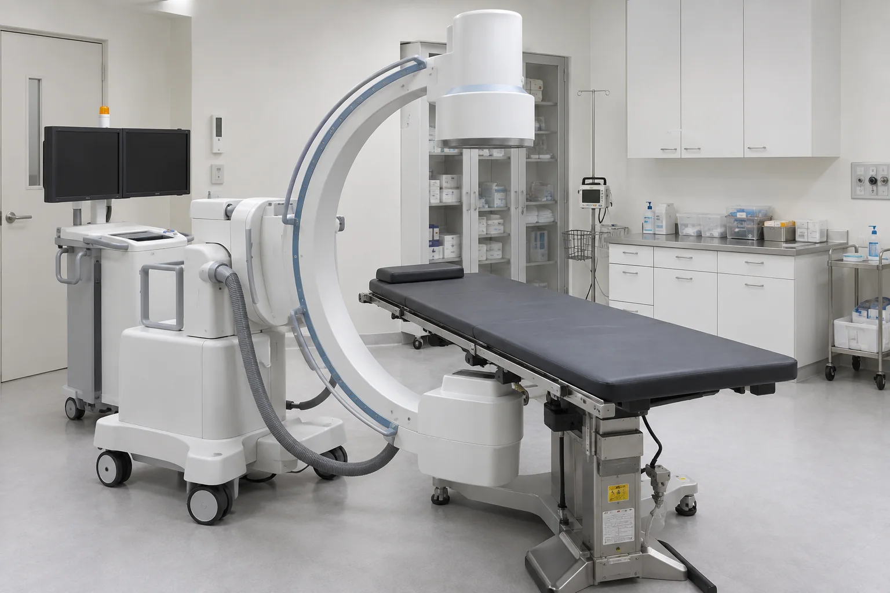

원인을 찾아 치료하는 여의도기통찬 주사치료
단순히 화재경보(통증)만 끄는 것이 아닌, 근본적인 불(원인)을 끄는 치료입니다.
통증은 우리 몸에 문제가 생겼음을
알리는 경고 신호입니다.
여의도기통찬의 주사치료는 통증만 일시적으로
줄이는 데 그치지 않고,
뭉치고 짧아진 근육과
그로 인해 압박·자극받는 신경을 세심하게 살펴
통증의 근본 원인이 되는 부위를 찾아 치료하는
비수술
핵심
치료입니다.

CLINIC POINT
여의도기통찬 주사치료의 핵심 포인트
통증의 근본 원인을 바로잡는 치료
일시적인 통증 완화에 그치지 않고, 뭉치고 짧아진 근육과 그로 인해 압박·자극받는 신경을 살펴 통증의 근본 원인을 바로잡습니다.
NO 스테로이드,
부작용 걱정 없는 안전한 치료
스테로이드를 사용하지 않아 약물에 의한 부작용 및 조직 약화 걱정이 없으며, 반복 치료에도 안전합니다.
C-arm & 초음파 장비를 활용한
정밀 치료
C-arm 및 고해상도 초음파를 활용해 병변과 주변 신경·조직의 위치를 세밀하게 확인하며 정밀하게 치료합니다.
DIFFERENT
여의도기통찬 주사치료의 핵심 포인트
통증의 원인까지 찾아가는 정밀 주사치료
아픈 부위에만 주사하는 데 그치지 않고, 세심한 진찰을 통해 통증을 유발하는 근육과 신경의 문제를 찾아 원인이 되는 부위를 정밀하게 치료합니다.
꼭 필요한 치료를 위한 1:1 맞춤 판단
모든 환자에게 동일한 주사치료를 적용하지 않고, 증상과 통증의 정도, 유병 기간 등을 종합적으로 판단하여 환자에게 필요한 치료를 시행합니다.
INDICATION
주요 적용 질환
질환별 특성과 치료가 필요한 부위를 안내해드립니다.


YEOUIDO GITONGCHAN
주사치료 프로그램
① 기통샷주사(근신경 회복주사)
NO 스테로이드, 몸을 생각한 주사
통증을 없애는 것을 넘어, 진짜 회복을 위한 주사
통증의 원인을 찾아 직접 치료합니다.
우리 몸과 동일한 농도의 등장성 포도당으로 긴장된 근육과 예민해진 신경을 안정시키고, 몸이 스스로 회복하는 힘을 깨우는 회복 중심 치료입니다.
② 정밀 척추 신경주사
척추 통증, 필요한 곳을 정밀하게
C-arm 실시간 영상으로 척추의 구조와 목표 부위를 직접 확인하며, 통증과 관련된 신경 주변에 정밀하게 접근합니다.
염증을 가라앉히고 예민해진 신경을 안정시켜, 통증을 덜고 빠른 일상 복귀를 돕습니다.